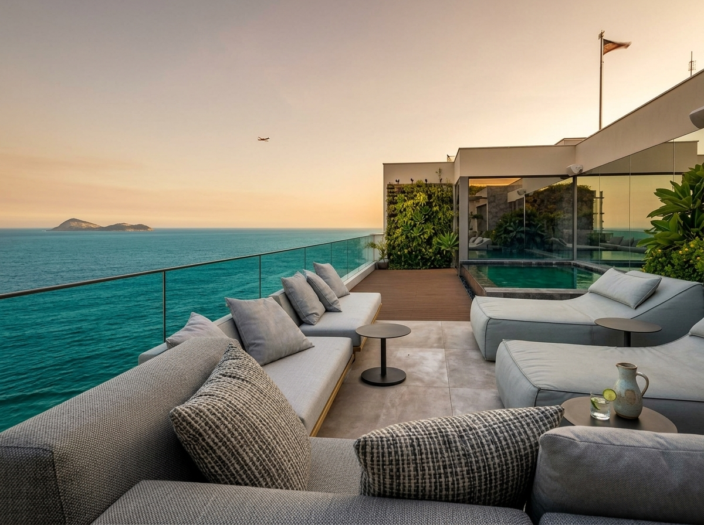

Guia de mercado de luxo · Rio de Janeiro, RJ
Cobertura Rio de Janeiro (RJ): Coberturas à Venda do Leblon à Barra da Tijuca
Quem pesquisa cobertura Rio de Janeiro quer saber quanto custa, onde estão as melhores opções e o que diferencia um imóvel de luxo de verdade. Reunimos os números do mercado para você chegar à visita preparado: na nossa amostra de setembro de 2026, uma cobertura no Rio de Janeiro teve preço mediano de R$ 2 milhões, e no Leblon a mediana chegou a R$ 4,5 milhões.
- Preço mediano
- R$ 2 mi · cidade
- Leblon
- R$ 4,5 mi · mediana
- m² mediano
- R$ 9,2 mil
- Condomínio
- R$ 2 mil/mês


Destaques: cobertura à venda no Rio de Janeiro, da Zona Sul ao Recreio
Mostrando 6 de 6 coberturas
 Alto padrão
Alto padrão
Cobertura Duplex 3 Quartos — Leblon
180 m² · Terraço com piscina · Perto da praia
3 quartos · 3 banheiros · 2 vagas
R$ 4.500.000 + condomínio R$ 2.800/mês
Ver Detalhes Venda
Venda
Cobertura Duplex 3 Quartos — Botafogo
250 m² · Vista para o Cristo · Perto do metrô
3 quartos · 2 banheiros · 2 vagas
R$ 3.900.000 + condomínio R$ 2.500/mês
Ver Detalhes Venda
Venda
Cobertura 3 Quartos — Humaitá
138 m² · Varanda · Perto da Lagoa
3 quartos · 2 banheiros · 1 vaga
R$ 2.650.000 + condomínio R$ 1.950/mês
Ver Detalhes Venda
Venda
Cobertura 3 Quartos — Barra da Tijuca
250 m² · Piscina e churrasqueira · Jardim Oceânico
3 quartos · 3 banheiros · 2 vagas
R$ 2.600.000 + condomínio R$ 2.100/mês
Ver Detalhes Venda
Venda
Cobertura 4 Quartos — Recreio dos Bandeirantes
280 m² · Terraço gourmet · Perto da praia
4 quartos · 3 banheiros · 2 vagas
R$ 1.550.000 + condomínio R$ 1.700/mês
Ver Detalhes Venda
Venda
Cobertura 2 Quartos — Recreio dos Bandeirantes
213 m² · Piscina e terraço
2 quartos · 2 banheiros · 2 vagas
R$ 1.350.000 + condomínio R$ 980/mês
Ver DetalhesNenhum destaque com esse perfil agora.
Os corretores parceiros têm mais opções fora desta vitrine.
Pedir opções no WhatsAppExemplos com base nas medianas e em anúncios reais da amostra. A disponibilidade, os valores e a possibilidade de locação de cada unidade são confirmados pelo corretor parceiro no atendimento.
Resumo rápido
- Preço mediano de R$ 2 milhões na cidade, cerca de R$ 9,2 mil por m².
- No Leblon, a mediana sobe para R$ 4,5 milhões, perto de R$ 21,6 mil por m².
- Barra da Tijuca e Recreio dos Bandeirantes lideram em número de anúncios.
- Piscina, churrasqueira, terraço e segurança 24 horas são os itens mais exigidos.
- Nossos corretores parceiros apresentam opções para comprar ou alugar e cuidam de toda a negociação.
Quanto custa uma cobertura no Rio de Janeiro
O mercado carioca de alto padrão é um dos mais ativos do país: só em um dos portais analisados, quem digita “coberturas Rio de Janeiro” encontra mais de 20 mil anúncios de venda. A faixa de preço é larga — de unidades abaixo de R$ 1 milhão na Zona Norte a imóveis acima de R$ 30 milhões à beira-mar no Leblon — e o metro quadrado muda completamente de um bairro para outro.
Distribuição de preços das coberturas na cidade
Percentual e número de anúncios por faixa de preço (17 anúncios com preço)
-
Até R$ 1 milhão 6% · 1
-
R$ 1 a 2 milhões mais comum 41% · 7
-
R$ 2 a 3 milhões 35% · 6
-
R$ 3 a 5 milhões 12% · 2
-
Acima de R$ 5 milhões 6% · 1
Quartos, preço mediano e metragem das coberturas
Proporção da amostra da cidade e valores medianos de cada tipologia
- 2 quartos (12%) R$ 870 mil · 170 m²
- 3 quartos (65%) R$ 2,6 mi · 232 m²
- 4 ou mais (24%) R$ 1,59 mi · 363 m²
As coberturas de 4 quartos ou mais saem mais baratas na mediana porque estão concentradas no Recreio e na Zona Norte, onde o m² custa menos da metade da Barra.
| Indicador | Cidade inteira | Leblon |
|---|---|---|
| Preço mediano de venda | R$ 2.000.000 | R$ 4.500.000 |
| Faixa de preços observada | R$ 390 mil a R$ 5,1 milhões | R$ 2,45 milhões a R$ 35 milhões |
| Preço mediano por m² | R$ 9,2 mil | R$ 21,6 mil |
| Área mediana | 250 m² | 176 m² |
| Condomínio mediano | R$ 2.050/mês | R$ 2.800/mês |
| Quartos mais comuns | 3 quartos (65%) | 2 ou 3 quartos (82%) |
A leitura é direta: pelo preço mediano de uma cobertura no Leblon, é possível comprar mais de duas na média da cidade. Por isso, definir o bairro antes de tudo é o passo que mais economiza tempo — e dinheiro — na busca por uma cobertura à venda no Rio de Janeiro.
Metodologia: levantamento da Toca de Aluguel em setembro de 2026 com anúncios públicos de coberturas à venda em três portais imobiliários — 18 anúncios em toda a cidade (17 com preço informado) e 17 anúncios únicos no Leblon, que somava 892 coberturas à venda no período. Valores de referência; o preço final e as condições de venda ou locação são confirmados pelo corretor responsável.
Bairros vizinhos e regiões de influência: Leblon, Botafogo, Barra da Tijuca e Recreio dos Bandeirantes
Compare o preço mediano e o metro quadrado de cada bairro antes de visitar. Quem não fecha no Leblon costuma olhar Botafogo e Humaitá, com vista para o Cristo e metrô perto; quem quer terraço maior pelo mesmo valor segue para a Barra da Tijuca e o Recreio dos Bandeirantes.
-
17 anúncios
Leblon
Zona Sul · praia e Mirante
R$ 4,5 mi · R$ 21,6 mil/m²
-
1 anúncio
Botafogo
Zona Sul · metrô e vista do Cristo
R$ 5,1 mi · R$ 20,3 mil/m²
-
1 anúncio
Humaitá
Zona Sul · perto da Lagoa
R$ 2,65 mi · R$ 19,2 mil/m²
-
7 anúncios
Barra da Tijuca
Zona Oeste · inclui Jardim Oceânico
R$ 2,6 mi · R$ 10 mil/m²
-
4 anúncios
Recreio dos Bandeirantes
Zona Oeste · terraços amplos
R$ 1,55 mi · R$ 5,7 mil/m²
-
1 anúncio
Vila Isabel
Zona Norte · coberturas grandes
R$ 1,55 mi · R$ 3,2 mil/m²
-
1 anúncio
Olaria
Zona Norte · 520 m²
R$ 1,05 mi · R$ 2 mil/m²
-
1 anúncio
Engenho Novo
Zona Norte · entrada
R$ 390 mil · R$ 3,1 mil/m²
Leblon: 17 anúncios únicos do ZAP Imóveis. Demais bairros: 17 anúncios do Imovelweb em toda a cidade. Bairros com um único anúncio têm valor apenas indicativo.
Comodidades de luxo mais exigidas nas coberturas do Rio
Nos anúncios analisados, quatro itens se repetem e definem o padrão de uma cobertura de luxo. Quem busca “Rio de Janeiro cobertura com piscina” está no caminho certo: é o item mais frequente da lista.
-
61% dos anúncios
Piscina privativa ou do condomínio
Aparece na maioria dos anúncios, seja no terraço da cobertura, seja na área de lazer do prédio.
-
56% dos anúncios
Churrasqueira e área gourmet
O espaço gourmet no terraço é o ponto de encontro da família e um dos itens que mais valorizam o imóvel.
-
28% dos anúncios
Terraço ou varanda ampla
A área externa privativa é o que diferencia a cobertura de um apartamento comum — confira se está averbada na matrícula.
-
17% dos anúncios
Segurança e portaria 24 horas
Portaria, controle de acesso e segurança 24 horas são prioridade em imóveis de alto valor.
Academia, sauna e jardim completam a lista. A vista — para o mar, a Lagoa ou o Cristo — não aparece como filtro nos portais, mas costuma ser o fator que mais pesa no preço de uma cobertura no Rio de Janeiro.
Bairros de alto padrão com cobertura à venda no Rio de Janeiro
A oferta se divide entre dois polos: a Zona Sul, com o metro quadrado mais caro do país e vista para o mar ou para a Lagoa, e a Zona Oeste, onde a mesma verba compra terraços maiores e condomínios com lazer completo.
Leblon
O endereço mais desejado do Rio, com 892 coberturas à venda no período analisado. A mediana fica em R$ 4,5 milhões, com unidades de 2 e 3 quartos perto de 176 m². A Praia do Leblon, o Mirante do Leblon e a Rua Dias Ferreira estão a poucos passos.
Barra da Tijuca
Líder em número de anúncios na amostra da cidade, somando Jardim Oceânico e Barra Olímpica. A mediana é de R$ 2,6 milhões, cerca de R$ 10 mil por m², com piscina e churrasqueira como padrão e acesso pela Linha 4 do metrô no Jardim Oceânico.
Recreio dos Bandeirantes
O melhor custo por metro quadrado entre os bairros de praia: mediana de R$ 1,55 milhão para cerca de 270 m², perto de R$ 5,7 mil por m². Ideal para famílias que querem terraço amplo perto da Praia do Recreio e da Pedra do Pontal.
Ipanema e Lagoa completam o trio mais valorizado da Zona Sul, com oferta menor e disputada. Botafogo e Humaitá aparecem como alternativa para quem quer uma cobertura no Rio perto do metrô e com vista para o Pão de Açúcar ou o Cristo Redentor, com valores observados entre R$ 2,6 milhões e R$ 5 milhões.
Copacabana e Jardim Botânico, na Zona Sul, e Freguesia e Jacarepaguá, na Zona Oeste, não apareceram na amostra, mas também têm cobertura à venda. Nesses bairros, peça ao corretor parceiro os valores atuais de cada imóvel antes de agendar a visita.
Mapa do Rio de Janeiro (RJ): de Copacabana e Ipanema à Barra da Tijuca
Compare a distância entre a cobertura, a praia e a sua rotina — do Mirante do Leblon à Pedra do Pontal, passando pela Lagoa Rodrigo de Freitas e pela Avenida das Américas. Toque em um bairro ou ponto de referência para centralizar o mapa.
Exibindo: Rio de Janeiro, RJ
Bairros
Praias e mirantes
Avenidas e vias
Centros comerciais
Conheça o Leblon: O Bairro Mais Desejado para Cobertura no Rio
Antes de escolher a sua cobertura no Rio de Janeiro, dê o play e passe um dia no Leblon: a orla, os restaurantes da Dias Ferreira, o comércio de rua e o ritmo do bairro mais chique da cidade. Em poucos minutos, você sente se esse estilo de vida combina com você — e chega à visita muito mais seguro da decisão.
Como comprar ou alugar cobertura no Rio de Janeiro com segurança
-
Defina bairro, orçamento e custos fixos
Some ao preço o condomínio e o IPTU — use R$ 2 milhões e R$ 2 mil de condomínio como referência da cidade, ou R$ 4,5 milhões e R$ 2,8 mil no Leblon. Na compra, reserve também o valor de ITBI, escritura e registro.
-
Fale com um corretor parceiro
Pelo WhatsApp, você recebe opções compatíveis com o seu perfil — venda ou locação — e agenda visitas no mesmo dia, inclusive a imóveis que ainda não estão nos portais.
-
Confira a documentação do terraço
Em cobertura apartamento, piscina e ampliações no terraço precisam estar regularizadas. O corretor (CRECI) verifica a matrícula, as certidões e a área averbada antes da proposta ou do contrato de locação.
Perguntas frequentes sobre cobertura no Rio de Janeiro
Quanto custa uma cobertura no Rio de Janeiro?
Na amostra analisada pela Toca de Aluguel em setembro de 2026, o preço mediano de uma cobertura à venda no Rio de Janeiro ficou em R$ 2 milhões, cerca de R$ 9,2 mil por metro quadrado. No Leblon, a mediana sobe para R$ 4,5 milhões, perto de R$ 21,6 mil por metro quadrado.
Quais são os melhores bairros para comprar cobertura no Rio?
Na Zona Sul, Leblon, Ipanema e Lagoa concentram as coberturas mais valorizadas, com Botafogo e Humaitá como alternativas. Na Zona Oeste, Barra da Tijuca, Jardim Oceânico e Recreio dos Bandeirantes lideram em número de anúncios e oferecem mais metros quadrados pelo mesmo valor.
Qual a diferença entre cobertura e apartamento?
A cobertura é o apartamento do último andar, geralmente duplex ou com terraço privativo. Em muitos portais o imóvel aparece como cobertura apartamento, ou seja, um apartamento no topo do prédio com área externa exclusiva, que pode ter piscina, churrasqueira e vista livre.
É possível alugar uma cobertura no Rio de Janeiro?
Sim. A oferta para locação é menor do que a de venda, mas os corretores parceiros da Toca de Aluguel buscam coberturas para alugar de acordo com o bairro, o orçamento e o prazo desejados, e conduzem a garantia locatícia e o contrato.
Quais custos considerar além do preço da cobertura?
Condomínio e IPTU pesam no orçamento: o condomínio mediano da amostra foi de cerca de R$ 2 mil por mês na cidade e de R$ 2,8 mil no Leblon. Na compra, some também ITBI, escritura e registro do imóvel.
Conclusão: sua cobertura no Rio está a uma conversa
Com preço mediano de R$ 2 milhões na cidade e oferta que vai do Leblon ao Recreio dos Bandeirantes, o mercado de cobertura no Rio de Janeiro tem opções para cada estilo de vida e orçamento. Fale com nossos corretores parceiros, conte o que você procura e receba opções de coberturas para comprar ou alugar.
Falar com corretor no WhatsApp